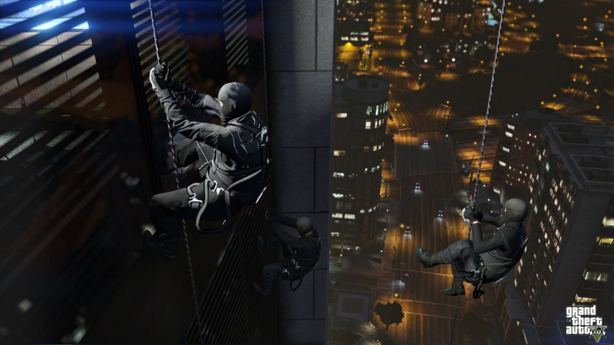

4-speler coöperatieve ervaring voor GTA Online, geeft spelers de kans om een team vormen een reeks van intense multi-part heists, overvallen en berovingen te trekken uit. Online Heists overspannen tal van missies met nieuwe gameplay, voertuigen, wapens en scenario's om de volledige set van vaardigheden van een team te testen. Kies uw rollen en strategieën voor elke fase van een Heist voltooien, met strakke communicatie en coördinatie de sleutel tot succes en volledige Elite Uitdagingen voor extra geld. Probeer ook Tegenstander modi, nieuwe Daily Doelstellingen en andere Freemode activiteiten.
De Heists update stelt spelers in staat om te plannen, voorbereiden en uitvoeren van multi-tiered Heists over Los Santos en Blaine County door middel van een reeks van nieuwe missies georganiseerd door Lester Crest , Ron Jakowski en een nieuw karakter, alleen bekend als Agent 14 . Deze vereisen strakke communicatie en coördinatie, met spelers die op bepaalde rollen op elk punt om meerdere doelstellingen op de weg te bereiken om de Heists voltooien.
De update is voorzien van nieuwe voertuigen, wapens en kleding.
Minor grafische wijzigingen aan de ingang van geselecteerde high-end appartementsgebouwen werden gemaakt, naast een breed scala van nieuwe animaties bij het betreden en het verlaten van uw appartement. De Garage interieur is ook bijgewerkt om een nieuwe spannende animatie bevatten als te voet.
In tegenstelling tot eerdere DLC's werd geen inhoud aan Grand Theft Auto V toegevoegd in deze update, zoals de Heists DLC is exclusief voor Grand Theft Auto Online.
